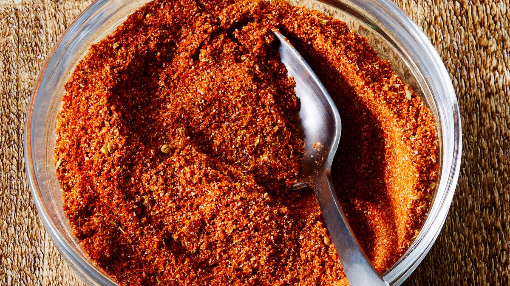

DIY Taco Seasoning

Easy Taco Seasoning
Skip the premade mix and try out this easy recipe
Ingredients
- 1 tablespoon chili powder
- 1 ½ teaspoons ground cumin
- 1 teaspoon sea salt
- 1 teaspoon ground black pepper
- ½ teaspoon ground paprika
- ¼ teaspoon garlic powder
- ¼ teaspoon onion powder
- ¼ teaspoon dried oregano
Instructions
- Gather all ingredients
- Mix spices in a small bowl until combined